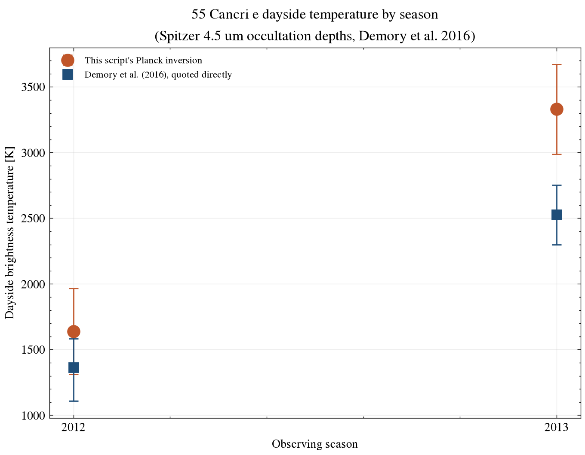

Data source notes
SHA-256, LF-normalised text
8a718ab5cbb34d50c4d4c817e11b16ec5d34e04801c867c6dd8e8c6d41c4b9caBrowse 4 versioned evidence files. Table previews simply display stored rows. Consult the project report for the source, processing steps, and inference assumptions.

8a718ab5cbb34d50c4d4c817e11b16ec5d34e04801c867c6dd8e8c6d41c4b9ca| season | occultation_depth_ppm | occultation_depth_err_ppm | reference |
|---|---|---|---|
| 2012 | 47 | 21 | Demory et al. 2016 (season-split MCMC fit |
| 2013 | 176 | 28 | Demory et al. 2016 (season-split MCMC fit |
81826dbcec0e224a0758e0a79bfe6f46d2c3f362015b25f924ea5294babc90bf| quantity | value | unit |
|---|---|---|
| t_day_2012_this_script | 1639 +/- 328 | K |
| t_day_2012_paper | 1365 (+219/-257) | K |
| t_day_2013_this_script | 3330 +/- 341 | K |
| t_day_2013_paper | 2528 (+224/-229) | K |
dab3777134f40038dc6d3373644e4f290afdeb146740d7fdd8d6ba507d6388d497b88b3ae2596eb4e32bda29258aca6d375db134c68de71071db2a4bb64fb499SHA-256 values verify the stored files. They do not independently validate the scientific analysis. Rebuild this page with python scripts/evidence_catalog.py followed by python scripts/render_evidence_page.py.